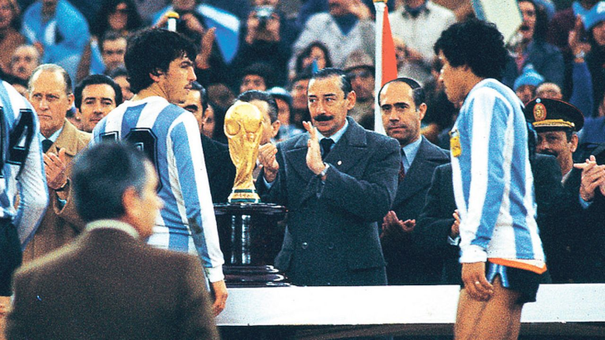

Dictadura Militar en Argentina
24 de marzo de 1976
El inicio de un gobierno de facto

El 24 de marzo de 1976 comenzó en Argentina una dictadura militar que tomó el poder mediante un golpe de Estado. Este período, conocido como el Proceso de Reorganización Nacional, estuvo marcado por la represion, la censura y la violación de los derechos humanos. Miles de personas fueron secuestradas, torturadas y desaparecidas por el Estado.
Presidentes del Proceso

Jorge Rafael Videla
Primer mandato liderado por el teniente general Jorge Rafael Videla (1976–1981), el más conocido y longevo en el cargo.

Roberto Viola
General del ejército Roberto Viola (1981–1981).

Leopoldo Galtieri
El teniente general Leopoldo Fortunato Galtieri (1981–1982). Ordenó la guerra contra el Reino Unido por las Islas Malvinas el 2 de abril de 1982.

Reynaldo Bignone
Reynaldo Benito Bignone (1982–1983) cerró el gobierno militar convocando a elecciones democráticas el 30 de octubre de 1983.
Mundial 1978
Durante este "Proceso De Reorganización Nacional" se llevó a cabo el Mundial de Fútbol organizado por la FIFA, siendo Argentina sede de la competición.

Hubo/hay rumores de que fue todo un plan del gobierno encabezado por ese entonces presidente Jorge Rafael Videla, como una distracción de lo que ocurría en el país. Figuras internacionales como el secretario de Estado de EE.UU. Henry Kissinger asistieron al evento, dándole una imagen de normalidad al régimen ante el mundo. Argentina saldría campeón de aquella edición de la que fue sede, siendo revelado tiempo después que el partido clave fue el 6 a 0 ante Perú, un resultado que generó fuertes sospechas de arreglo, y que militares habrían intimidado a rivales para que se dejasen ganar.Desaparecidos

Durante este gobierno de facto, hubo un estimado de 30.000 desaparecidos, por la causa de tener opinion diferente a la del gobierno, eran sorprendidos en sus casas a altas horas de la noche y transportados en los baules de los Ford Falcon verde, estos eran llevados a centros clandestinos de detencion, donde eran torturados y maltratados, los mas conocidos son Automotores Orletti, un taller mecanico que ocultaba un centro de tortura y exterminio, y la ESMA (Escuela de Mecanica de la Armada)

Estos secuestros podian llevarlos a los proclamados "Vuelos de la muerte", en los que se subian a los detenidos en un Lockheed C-130 Hercules (Avion de las Fuerzas Aereas Argentinas) y lanzados desde gran altura hacia el Rio de la Plata. Esto era parte del Plan Condor de Estados Unidos, para exterminar el comunismo de America.

Abuelas/Madres de Plaza de Mayo

Frente a esta situacion, surgieron organizaciones de derechos humanos como las Madres de Plaza de Mayo y las Abuelas de Plaza de Mayo.
Estas mujeres comenzaron a reunirse en la Plaza de Mayo para reclamar por sus hijos y nietos desaparecidos,
caminaban dando vueltas alrededor de la plaza, con un pañuelo blanco en la cabeza que simbolizaba el pañal de los bebes desaparecidos.

Entre sus principales referentes se destacaron Hebe de Bonafini y Estela de Carlotto, quienes se convirtieron en símbolos de la lucha por la memoria, la verdad y la justicia. Gracias a su trabajo, se logró recuperar la identidad de muchos nietos apropiados durante la dictadura.